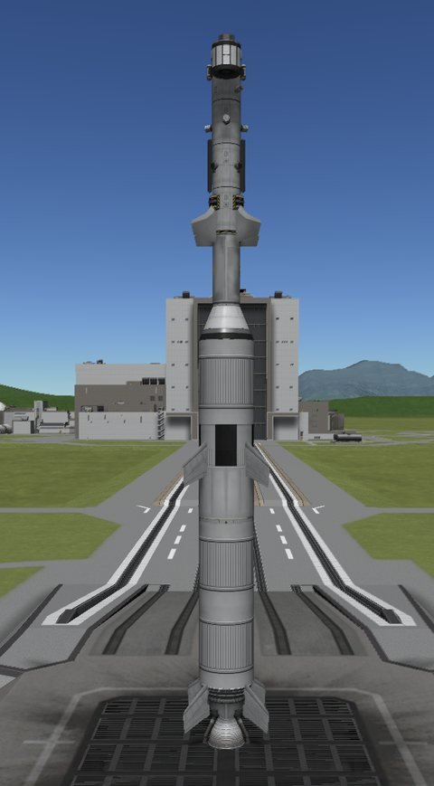
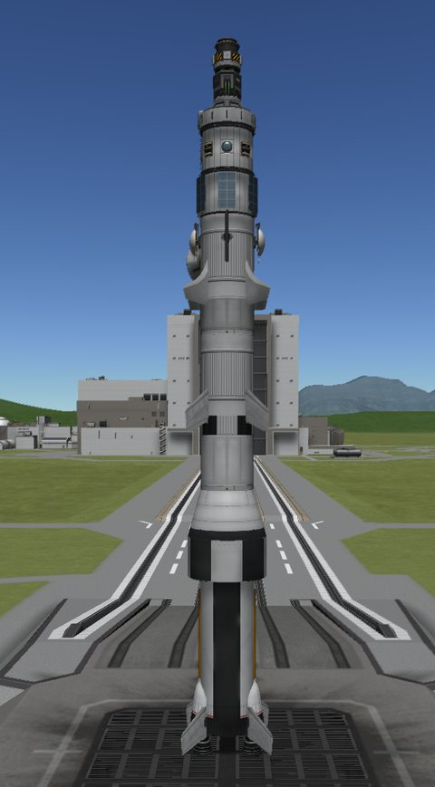
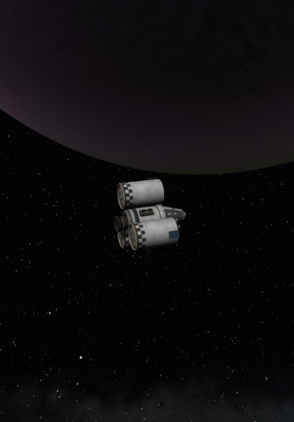
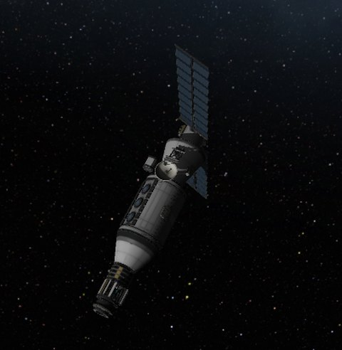

Where it has been
2026-09-26 · day 3
달 둘·행성 하나에 착륙
Eve
Jeb ·
Kerbin 도착
~d+218
~1,017
sci 탑재
Kerbin
위성
4
Mun
착륙
2
Minmus
착륙
6
정거장
1
Duna
착륙
1
Jool
Jool 1
Jool 도착
~2y 168d
지금 날고 있는 것

Jool 1
무인 · #44
Jool로 이동 중
~2y 168d
Jool 도착

Ike Station 1
무인 · #45
Ike 궤도 (정거장)
~d+0
계약 완료

Eve 1
Jeb · #37
Eve → Kerbin
~d+218
Kerbin 도착

Minmus Lab 1
Bob, Gwenbro · #41
Minmus 극궤도 14 km
~9.3
sci / 일